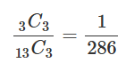
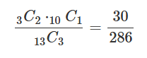
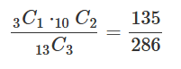

로또 확률 계산하기
1등 당첨 확률
당첨번호 3개 모두 포함되는 경우의 수에
13개 중에서 순서 상관 없이 3개를 뽑는 경우의 수를 나누면 1등 당첨 확률이 나온다.
3C3/13C3 = 1/286

2등 당첨 확률
위와 똑같이 당첨번호 2개를 포함하고 당첨번호가 아닌 수 1개를 선택하는 수에
13개 중에서 순서 상관 없이 3개를 뽑는 경우의 수를 나누면 2등 당첨 확률이 나온다.
3C2*10C1/13C3 = 30/286 = 15/143

3등 당첨 확률
당첨번호 1개만 포함하고 당첨번호가 아닌 수 2개를 선택하는 수에 13개 중에서 순서 상관 없이 3개를 뽑는 경우의 수를 나누면 3등 당첨 확률이 나온다.
3C1*10C2/13C3 = 135/286
